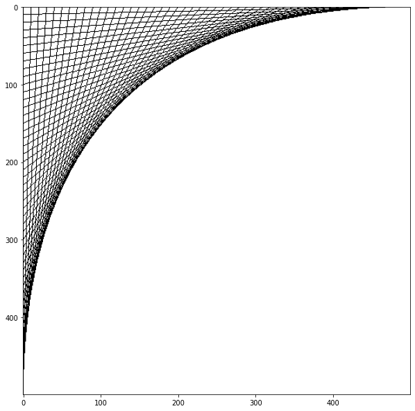

Lancer la version interactive sur : 

Introduction aux images¶
Objectifs et durée¶
L’objectif de ce cours est de vous familiariser aux bases du traitement d’images. L’objectif sera d’abord de découvrir de quelle manière les images sont généralement représentées de façon numérique en programmant des outils permettant de dessiner des motifs simples sur une image. Il permettra de déboucher sur des exercices de traitement du signal permettant d’aller jusqu’à résoudre des problèmes classiques en science de la vie. Il faudra compter environ 12 périodes pour le réaliser en classe.
Utilisation des librairies standards¶
Pour manipuler des images et les visualiser sur un notebook, il est classique de commencer par utiliser deux librairies.
[1]:
import numpy as np # Pour manipuler des tableaux de nombres
import matplotlib.pyplot as plt # pour afficher des images
Une image en niveaux de gris est une grille de valeurs sur deux dimensions. Chaque valeur de cette grille représente l’intensité lumineuse à une certaine abscisse et une certaine ordonnée. Commençons par définir une telle grille pleine de zéros (une iamge noire) grâce à la librairie numpy.
[2]:
# Creation d'une image noire de taille hauteur x largeur
# (ou plus précisément d'un tableau de hauteur x largeur nombres tous égaux à zéros
# c'est comme une liste à deux dimensions)
hauteur = 12
largeur = 16
img = np.zeros((hauteur,largeur))#.astype(np.int8)
# Affichage du type de img
print("type(img): "+str(type(img)))
# Affichage de la taille d'une image
print("img.shape: "+str(img.shape))
type(img): <class 'numpy.ndarray'>
img.shape: (12, 16)
Comme on le voit, la variable img est de type numpy.ndarray ce qui correspond à un tableau à N-dimensions, avec ici N = 2. Ce type vient avec certains attributs telle que shape qui nous donne sa taille, et des méthodes telles que transpose() qui nous permettent de retourner les axes x et y.
La fonction print() accepte comme argument les ndarray, ce qui nous permettra de voir les valeurs qu’il y a dans notre image. Si on regarde bien le résultat, on voit que cela correspond à une liste de liste comme nous les avions vu dans les cours précédents.
[3]:
print(img)
[[0. 0. 0. 0. 0. 0. 0. 0. 0. 0. 0. 0. 0. 0. 0. 0.]
[0. 0. 0. 0. 0. 0. 0. 0. 0. 0. 0. 0. 0. 0. 0. 0.]
[0. 0. 0. 0. 0. 0. 0. 0. 0. 0. 0. 0. 0. 0. 0. 0.]
[0. 0. 0. 0. 0. 0. 0. 0. 0. 0. 0. 0. 0. 0. 0. 0.]
[0. 0. 0. 0. 0. 0. 0. 0. 0. 0. 0. 0. 0. 0. 0. 0.]
[0. 0. 0. 0. 0. 0. 0. 0. 0. 0. 0. 0. 0. 0. 0. 0.]
[0. 0. 0. 0. 0. 0. 0. 0. 0. 0. 0. 0. 0. 0. 0. 0.]
[0. 0. 0. 0. 0. 0. 0. 0. 0. 0. 0. 0. 0. 0. 0. 0.]
[0. 0. 0. 0. 0. 0. 0. 0. 0. 0. 0. 0. 0. 0. 0. 0.]
[0. 0. 0. 0. 0. 0. 0. 0. 0. 0. 0. 0. 0. 0. 0. 0.]
[0. 0. 0. 0. 0. 0. 0. 0. 0. 0. 0. 0. 0. 0. 0. 0.]
[0. 0. 0. 0. 0. 0. 0. 0. 0. 0. 0. 0. 0. 0. 0. 0.]]
Mais il sera bien évidement utile d’afficher l’image comme une image et non comme un tableau de valeurs. Malheureusement cela n’est pas offert par la librairie numpy. Cela fait sens en même temps car elle est dédiée au calcul numérique. Pour afficher une image on utilisera une librarie dédiée à la visualisation de donnée qui s’appelle matplotlib (celle déjà utilisée précédemment pour dessiner des graphiques) de cette manière:
[5]:
# Affichage de l'image
plt.imshow(img, cmap='gray',vmin = 0, vmax = 255)
plt.show()
En traitement d’images il est standard de mettre l’origine de l’image en haut à gauche, comme pour les matrices en mathématiques. Comme on le voit dans cette figure c’est le cas ici. Remarquez également que les fonctions utilisées utilisent d’autres arguments que l’image. Pour l’instant retenons simplement qu’en utilisant ces arguments nous pourrons voir notre image en niveaux de gris.
Remarquez également que la taille de l’image rendue par l’attribut shape a deux éléments qui sont mis entre parenthèses. On appelle cela un tuple. C’est un type similaire aux listes. On peut accéder aux deux éléments grâce aux crochets []. Par contre la particularité du tuple est que l’on ne pourra pas modifier son contenu.
[ ]:
# Ex. 1
# def creer_image
# def printSize
# def montrer_image
# test des fonctions
img = creer_image(20,30)
## Représentation des images au format numérique
Les images numériques sont représentées de deux façons: soit elles sont pixelisées, soit elles sont au format vectoriel. Ici nous nous intéresserons au format pixel. Les images pixelisées sont découpées sous forme d’une grille de pixels, et pour chaque pixel le niveau de gris ou la couleur est définie à l’aide d’un ou respectivement 3 nombres. Ces nombres sont généralement définis en 8 bits (8 zéros ou uns), ce qui donne un nombre pouvant aller de 0 à 255 compris.
Pour commencer nous travaillerons avec des images en niveaux de gris. Dans ce cas, chaque pixel est défini par un nombre entier allant de 0 à 255. 0 correspondant au noir et 255 au blanc.
Accès et manipulation des pixels¶
Pour accéder aux valeurs d’un pixel dans une image, c’est à dire aux valeurs dans un tableau à 2 dimensions, on utilise le même outil que pour les listes: on va utiliser des indexes. Avec une liste à une dimension ma_liste, on accédera au premier élément grâce aux crochets et à l’index 0 en écrivant ma_liste[0]. Pour accéder à un élément d’une image, il faudra spécifier à quelle ligne et quelle colonne nous voulons accéder, par exemple pour accéder au pixel en haut à gauche de l’image img on utilisera l’instruction img[0,0]. Comme pour toutes les variables, il sera possible d’accéder à cet élément mais aussi de l’affecter:
[16]:
# accès
print(img[0,0])
0.0
[17]:
# affectation
img[0,0] = 255
# affichage du résultat
print(img[0,0])
plt.imshow(img, cmap='gray',vmin = 0, vmax = 255)
plt.show()
255.0
Et bien sur il est également possible de faire des opérations sur chaque valeur de pixel mais aussi sur toutes les valeurs de l’image d’un coup.
[4]:
# diviser par deux toutes les intensités de l'image
img = 0.5 * img
[2]:
# Ex. 2
# def creer_image...
Accès au dernier, avant dernier… élément sur un axe¶
Comme nous savons qu’il y a img.shape[1] éléments dans une colonne, pour accéder au dernier élément de la première ligne, on pourrait écrire:
[18]:
print(img[0,img.shape[1]-1])
0.0
Mais cette instruction est longue et python nous offre avec sa syntaxe quelque chose de plus facile. Pour accéder au dernier élément de ma liste, je écrire l’index -1 (img[0,-1]), pour l’avant dernier -2 …
Accès et manipulation d’une partie de l’image¶
Alors qu’il est possible de manipuler une image pixel par pixel, il est parfois souhaitable d’accéder à une partie de l’image englobant plusieurs pixelsce qu’on appelle une tranche. Voici un exemple de cette outil:
[19]:
# On peut définir une tranche d'indices qui nous intéressent...
# En donnant le l'indice de début et de fin séparés d'un double point:
img[5,2:-3] = 255
img[6:8,2:-3] = 128
# Attention l'élément avec l'indice de fin n'est pas inclut dans la tranche !
# S'il n'y a pas d'indice à gauche du :, la tranche commencera à l'indice 0
# S'il n'y a pas d'indice à droite du :, la tranche finira au dernier indice
img[:-1,15] = 255
img[:,14] = 128
plt.imshow(img, cmap='gray',vmin = 0, vmax = 255)
plt.show()
[ ]:
# Ex. 4
# img_degrade = ...
# show
# flip
# show
[ ]:
# Ex. 5
# def draw_line_h...
# test drawline, show
# def IsInImage
# ...
[ ]:
# Ex. 6
def draw_line_simple(img,x1,y1,x2,y2,gray_level):
for i in range(x1,x2+1):
j = round(y1 + (y2-y1)*(i-x1)/(x2-x1))
img[j,i] = gray_level
Exercice 7¶
Utiliser les fonctions définies précédemment pour faire de l’art abstrait. Si vous n’avez pas d’inspiration vous pouvez essayer de recréer l’image suivante:

[ ]: